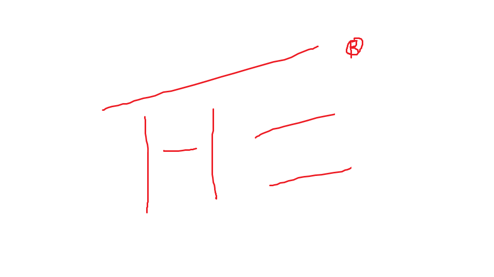

Hello! I am Awesome! Hear is My coding cheat sheet!
Everyone Loves a TheOwen! THE OWEN!
Git Cheat Sheet
Linux Cheat Sheet
HTML Cheet Sheet
Required programs to interact, modify, and work with this Web padge:
1a. Putty (windows)
1b. Termanal (Mac OS)
2. subline text
3. Cygwin (Windows)
4. Git Bash

©2016 THE Enterprises. All rights reserved.